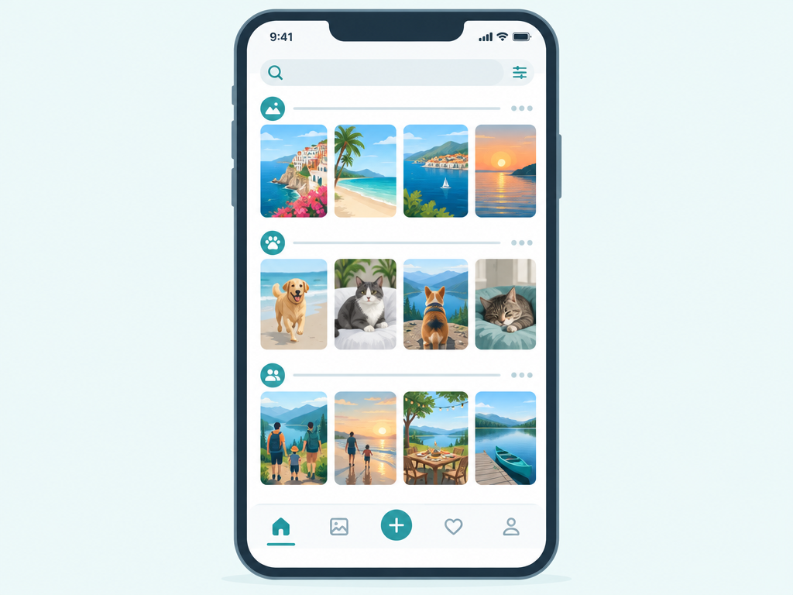

Backup that just happens
Install the Immich app, sign in to your server once, and that's the last time you think about backups. Every photo and video you take uploads in the background the moment you're on Wi-Fi — the same "it's just there" feeling as Google Photos, except the destination is a disk in your own house. Everything lands on a single timeline you can scroll by year, month or day, and because the original is already on your server you can clear your phone's storage without fear. No storage-full notifications, no upsell to a bigger Google One plan: your only limit is the size of the drive you own.

Search that runs on your own machine
Immich doesn't just store your photos, it understands them — and it does that locally, on your hardware, without sending a single image to anyone. It spots faces and groups them into people you can name. It detects objects, scenes and even text inside photos, and indexes locations from the GPS data your camera already recorded. That means you can search "beach 2024", "birthday cake" or your dog's name and get the shots back in seconds. You can also browse by person, by place, on a map, or jump straight to a date.
Albums, people and the small things you'd miss
Create albums from any device and add to them as you go. Share a whole album — with a public link for people who don't have an account, or directly with another user on your server and let them contribute. Immich also covers the details you only notice when they're gone: favourites, an archive for photos you want to keep but not see daily, a "recently added" view, and support for Live Photos, motion clips and RAW files. There are apps for Android and iOS plus a full web interface, so the whole household can use it at once, each with their own account and their own privacy.
Where it matches Google Photos — and where it doesn't
For the core job — back up, browse, search, organise, share — Immich is a genuine drop-in replacement, not a compromise. Be honest about the trade-offs, though: you give up Google's AI editing tricks (Magic Eraser, the cinematic photo effects), the effortless sharing with anyone who has a Google account, and the comfort of a company running it for you. What you gain is real: no subscription, no ads, no scanning your library to sell you things, and complete control over your own memories. If what you mainly want is your photos safe, organised and private, you won't miss the rest.